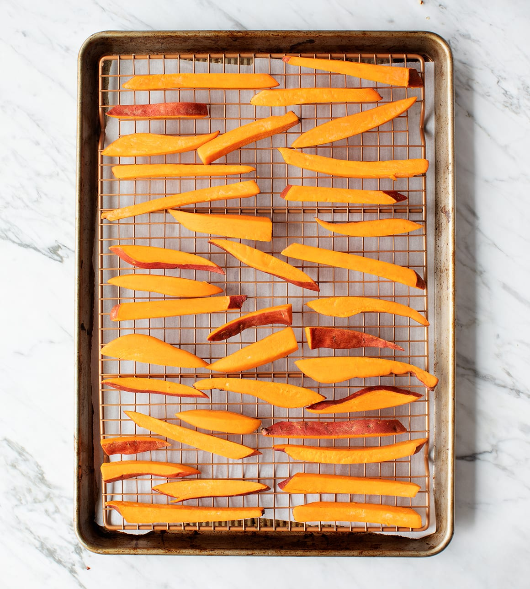

Do you crave sweet foods or do you crave salty foods? I used to be someone who needed a sweet treat in the afternoon, but over the years I’ve started to lean more toward the salty side. What’s nice about sweet potato fries is that they’re a bit sweet and salty – the best of both worlds, in terms of crave-ability! Plus, they’re healthy, especially when they’re baked in the oven vs. fried.

When I set out to make crisp, mouthwatering homemade sweet potato fries in the oven, I tried every tip and trick in the book. I soaked my sliced potatoes in cold water before cooking and then tossed them in cornstarch. I soaked my sliced potatoes and didn’t toss them in cornstarch. I sliced my potatoes, tossed them in cornstarch, and baked them without soaking. I salted before baking and after baking….I could keep listing variations all day, but I think you get the picture. After ample testing, here are my tips for making perfectly crispy fries at home:
1. Slice your sweet potatoes into matchsticks ¼-inch thick. Try to cut your fries to a uniform size so that they bake evenly.
2. Soak them in cold water for 30 minutes or more. Once your fries have soaked, transfer them to a kitchen towel and pat them dry.
3. Toss them with olive oil & cornstarch. Hold the salt!
4. Place your fries on a metal rack on a baking sheet with space in between each one. If they’re too crowded, they won’t crisp up in the oven. Bake in a 450-degree oven for 30 to 38 minutes, or until nicely browned & crisp, but not burnt.
5. Remove from the oven and season generously with sea salt. Toss with fresh herbs, red pepper flakes, and serve with ketchup, mustard, or chipotle mayo, as desired.